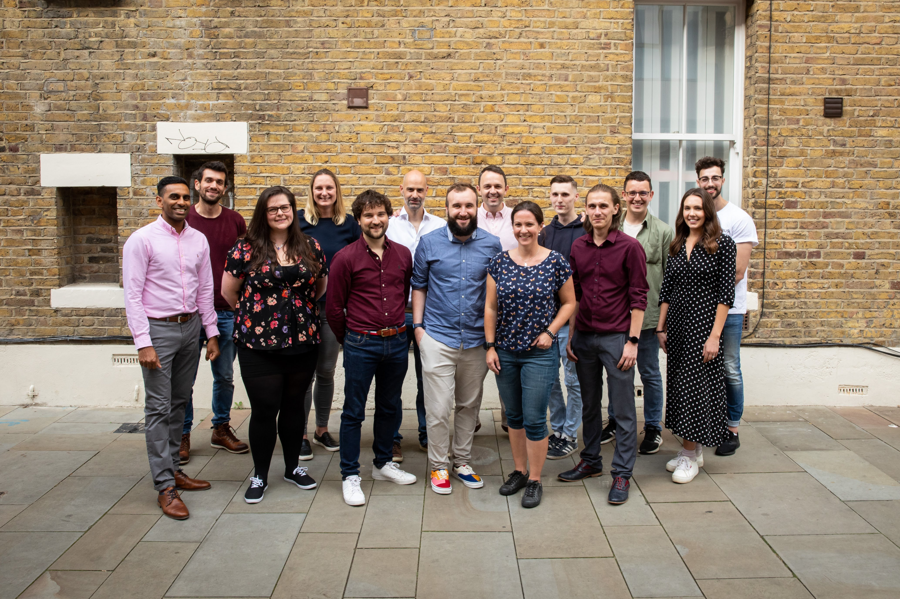

Countfire is a self-funded SaaS startup based in London, offering an industry-leading takeoff platform. Using SVG image recognition and intelligent automation, Countfire allows electrical estimators to count symbols across multiple technical building plans in seconds—drastically reducing manual effort and increasing accuracy.
My Role
As the Lead Product Designer, I was responsible for UX/UI design, wireframing, and prototyping in Figma. The platform was built in React and TailwindCSS, and I worked closely with ex-estimators, engineers, and stakeholders to enhance the product’s functionality and usability.

Starting with the job, not the tools
We spent the first few weeks doing discovery with estimators rather than looking at the existing product. The goal was to understand a job as they experienced it — not as our tool had chopped it into. A few things came up consistently:
- Estimators didn't think in terms of "takeoff" and "pricing" as separate tasks — to them it was one job, done in one sitting.
- Re-entering the same measurements into a second tool was the single biggest source of quiet, hard-to-catch errors.
- Confidence in a final number mattered as much as the number itself — estimators wanted to trace it back to its source.
Early signals
Some of this had already surfaced in support tickets and churn conversations, but seeing it play out over a shoulder during a real takeoff made it concrete in a way a support ticket never quite does.
I don't think about takeoff and pricing as different tasks. I think about the job. The software should too.
— An estimator interviewed during discovery
That reframing — a job, not a sequence of disconnected tasks — became the spine of the redesign. Every screen we shipped after that had to answer one question: does this keep the estimator inside their job, or does it send them somewhere else to find what they need?

Designing the connected view
The resulting interface kept takeoff, pricing, and materials visible in the same view, updating in real time as the estimator worked. A change on the drawing updated the price instantly. A change in pricing flagged which parts of the takeoff it touched. Nothing needed re-entering, and nothing needed a tab switch to confirm.
We were careful not to just merge three screens into one cluttered one. A lot of the actual design work was about sequencing — deciding what an estimator needed to see first, what could stay collapsed until relevant, and where a single number needed to be traceable back to its source without extra clicks.


What changed
Estimators stopped rebuilding the same numbers in a second tool just to double-check them. Fewer jobs went out the door with a price nobody was fully confident in. And, just as importantly, the product finally matched how the job was actually done in people's heads — as one thing, not five.